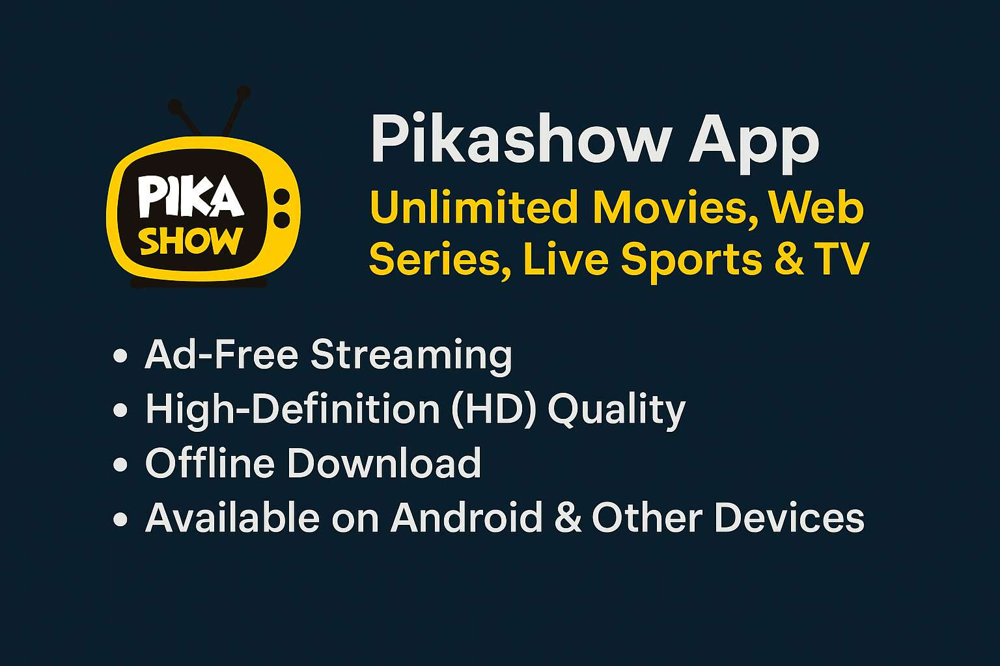

In today's fast-paced digital world, streaming platforms have become the primary source of entertainment for millions of users. Among the numerous apps available, Pikashow has emerged as a popular choice for those seeking unlimited access to movies, web series, live sports, and TV shows. With its ad-free streaming, high-definition quality, and offline download features, Pikashow offers a premium viewing experience on Android and other devices. This article explores the key features, benefits, and functionalities of Pikashow, making it a go-to entertainment hub for users worldwide.
Pikashow App is a versatile streaming application that provides users with a vast library of content, including the latest movies, trending web series, live sports events, and TV channels. Unlike many mainstream platforms that require paid subscriptions, Pikashow offers free access to a wide range of entertainment options. The app is designed to cater to diverse preferences, ensuring that users can enjoy everything from Hollywood blockbusters to regional cinema, popular TV shows, and live sports matches.
One of the standout aspects of Pikashow is its user-friendly interface, which makes navigation seamless. Whether you are looking for a specific movie or exploring new releases, the app organizes content efficiently, allowing users to find what they want without hassle. Additionally, Pikashow is regularly updated with fresh content, ensuring that users always have something new to watch.
Pikashow stands out from other streaming apps due to its impressive range of features. One of the most notable aspects is its ad-free streaming experience. Unlike many free platforms that interrupt viewing with frequent advertisements, Pikashow allows users to enjoy their favorite content without distractions. This feature significantly enhances the overall viewing experience, making it comparable to premium subscription-based services.
Another major advantage of Pikashow is its high-definition (HD) streaming quality. The app supports multiple resolutions, allowing users to adjust the video quality based on their internet speed and device capabilities. Whether you are watching on a smartphone, tablet, or smart TV, Pikashow ensures crisp and clear visuals for an immersive experience.
For users who prefer offline viewing, Pikashow offers a download feature. This allows you to save movies, web series, or TV episodes directly to your device and watch them later without an internet connection. This is particularly useful for travelers or those with limited data plans, as it enables uninterrupted entertainment on the go.
Pikashow boasts an extensive content library that caters to a wide range of tastes and preferences. Movie enthusiasts can explore the latest Hollywood releases, Bollywood hits, and regional films across various genres, including action, romance, comedy, thriller, and horror. The app also features a collection of classic films, ensuring that fans of timeless cinema have plenty to enjoy.
Web series have gained immense popularity in recent years, and Pikashow does not disappoint in this category. Users can binge-watch trending series from platforms like Netflix, Amazon Prime, Disney+, and more, all in one place. Whether you enjoy crime dramas, sci-fi adventures, or light-hearted comedies, Pikashow's diverse selection ensures there is something for everyone.
Sports fans are in for a treat, as Pikashow provides live streaming of major sporting events, including cricket, football, tennis, and basketball. With real-time updates and high-quality streams, users can catch their favorite matches without missing a moment of the action. Additionally, the app offers access to various TV channels, allowing users to stay updated with news, entertainment, and other programs.
Pikashow is primarily designed for Android devices, making it accessible to a vast user base. The app can be easily downloaded and installed from third-party sources, as it is not available on the Google Play Store. Once installed, users can start streaming immediately without the need for registration or subscription.
While Pikashow is optimized for Android, it can also be used on other devices, such as PCs, laptops, and smart TVs, with the help of emulators or screen-mirroring tools. This flexibility ensures that users can enjoy their favorite content on larger screens for a more cinematic experience.
One of the common concerns surrounding apps like Pikashow is their legality and safety. Since Pikashow provides free access to copyrighted content, it operates in a legal gray area. While the app itself does not host any content, it aggregates streams from various sources, which may not always have proper licensing agreements.
Users should be aware of the potential risks associated with using third-party streaming apps. To mitigate security concerns, it is advisable to use a reliable VPN (Virtual Private Network) while accessing Pikashow. A VPN helps protect your privacy by masking your IP address and encrypting your internet connection, reducing the risk of malware or data breaches.
Since Pikashow is not available on official app stores, users need to download the APK file from a trusted website. Before installation, ensure that your device allows installations from unknown sources by enabling the option in the security settings. Once the APK is downloaded, simply open the file and follow the on-screen instructions to complete the installation.
After installation, launch the app and explore its vast library. The intuitive interface makes it easy to browse through categories, search for specific titles, and start streaming within seconds. Regular updates are released to improve performance and add new content, so keeping the app updated ensures the best experience.
Pikashow has quickly become a favorite among streaming enthusiasts due to its extensive content library, ad-free experience, HD quality, and offline download feature. While it offers unparalleled convenience and entertainment, users should remain cautious about the legal and security implications of using third-party streaming apps. By taking necessary precautions, such as using a VPN, viewers can enjoy a seamless and secure streaming experience.
For those seeking a cost-effective way to access unlimited movies, web series, live sports, and TV shows, Pikashow presents a compelling option. Its user-friendly design and diverse content make it a standout choice in the world of digital entertainment. Whether you are at home or on the go, Pikashow ensures that premium entertainment is just a tap away.